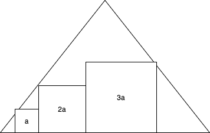

Archive of fun puzzles, brain teasers, red herrings, and other problems I've come across. It is split into two sections: problems and solutions. Solutions are linked at the top of their respective problem, followed by the problem statement. Solutions are covered and reveal themselves when the cursor hovers over the blackout.
Fred brings home 100 kg of potatoes, which (being purely mathematical potatoes) consist of 99% water. He then leaves them outside overnight so that they consist of 98% water. What is their new weight?
Given n random people, how many are needed that there is a 50% probability that at least two of them share the same birthday? What about 99.9% probability?
Given the following triangle with side lengths 1 and three squares of side lengths a, 2a, and 3a inside of it, find a. Note that the squares do not go outside the triangle, but just touch it (the drawing software I used is poor).
There are many variations to this, but I will give one of the more famous ones: the wolf, goat, and cabbage.
Once upon a time a farmer went to a market and purchased a wolf, a goat, and a cabbage. On his way home, the farmer came to the bank of a river and rented a boat. But crossing the river by boat, the farmer could carry only himself and a single one of his purchases: the wolf, the goat, or the cabbage. If left unattended together, the wolf would eat the goat, or the goat would eat the cabbage. The farmer's challenge was to carry himself and his purchases to the far bank of the river, leaving each purchase intact. How did he do it?
(In other words, the wolf and goat cannot be together and the goat and cabbage cannot be together. Assume he starts on the left side of the river and needs to get to the right side.)
Achilles and the tortoise decide to have a race, where Achilles gives the tortoise a 100 m head start. How long until Achilles passes the tortoise?
50 kg. At the beginning, the potatoes consist of 1 kg solid and 99 kg water. Because they only dehydrate, the solid mass stays constant, but the percentage changes to 2%. If 1 kg is 2%, then 100% (or the total weight of the potatoes) weighs 50 kg.
23 people for 50% and 70 people for 99.9%. The easiest method is to find the probability that two people don't share the same birthday, which can be calculated by \(P'(A) = 1 - P(A)\), where \(P(A)\) is the probability two people do share the same birthday. So, given person 1 who has a birthday on 01 January, there are 364 other possible birthdays person 2 can have, 363 for person 3, and so on. Each individual possibility needs to be divided by 365 and multiplied with all the others.This method can be followed until \(P'(A)) \leq 0.5\), or 50%, resulting in \(P'(A) = \frac{365}{365} \times \frac{364}{365} \times ... \times \frac{343}{365} = 0.493\). The same method is applied until \(P'(A) \leq 0.01\). Generalizing this solution results in \(P(n) = 1 - \frac{365!}{365^{n}(365 - n)!}\).
a = 0.120. Basic trigonometry is used. To find the bottom side's portion next to the smallest square: \(s_{s} = \frac{a}{\sqrt{3}}\). To find the bottom side's portion next to the largest square: \(s_{l} = \frac{3a}{\sqrt{3}}\). Sum all lengths together and set equal to 1: \(1 = \frac{a}{\sqrt{3}} + a + 2a + 3a + \frac{3a}{\sqrt{3}} = 8.31a\). Solve for a: a = 0.120.
Never (in a sense). This is a trick question, and one of Zeno's paradoxes. As Aristotle describes: "In a race, the quickest runner can never overtake the slowest, since the pursuer must first reach the point whence the pursued started, so that the slower must always hold a lead." The distance between the two gets infinitesimally small, but never negative (meaning Achilles passes the tortoise).